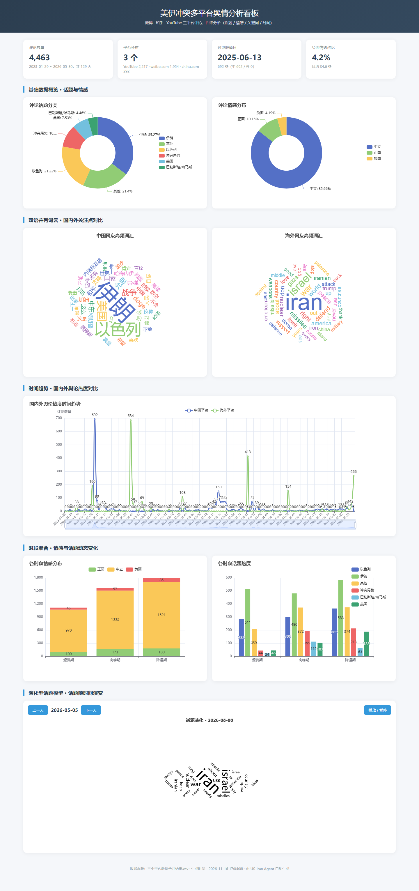

微博 / 知乎 / YouTube 三平台评论的采集、清洗、四维分析与可视化， 由 LLM Agent 通过 9 个工具自主编排，而非写死的脚本菜单。

8 个图表面板：话题分布 / 情感分布 / 内外网双语词云 / 时间趋势 / 分期聚合 / 话题演化动态词云
把原来「人按菜单点 13 次」的脚本流水线，改成「说一句话，模型自己决定调哪几个工具」。 工具粒度拆到 9 个原子步骤，模型才有跳步与补跑的空间；工具异常统一转成中文可读提示返回而非抛错， 模型拿到提示能自我纠偏；提示词里固化「数字只能来自工具返回」，抑制数据幻觉； 同时保留一条不依赖 LLM 的确定性流水线，模型不可用时仍能完整交付。
outputs/analysis_result.json 中的数字均为真实运行结果（聚合统计 + 9 条匿名片段）。
复现方式见 README 的「关于数据」一节。